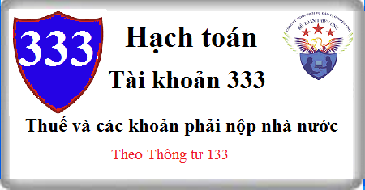

Cách hạch toán Tài khoản Tài khoản 333 theo Thông tư 133, cách hạch toán các loại thuế phải nộp nhà nước như: Thuế GTGT, TNCN, TNDN, XNK, TTĐB, BVMT, TN, Phí lệ phí.
1. Nguyên tắc kế toán Tài khoản 333 - Thuế và các khoản phải nộp nhà nước
1.1. Tài khoản này dùng để phản ánh quan hệ giữa doanh nghiệp với Nhà nước về các khoản thuế, phí, lệ phí và các khoản khác phải nộp, đã nộp, còn phải nộp vào Ngân sách Nhà nước trong kỳ kế toán năm.
1.2. Doanh nghiệp chủ động tính, xác định và kê khai số thuế, phí, lệ phí và các khoản phải nộp cho Nhà nước theo luật định; Kịp thời phản ánh vào sổ kế toán số thuế phải nộp, đã nộp, được khấu trừ, được hoàn...
1.3. Các khoản thuế gián thu như thuế GTGT (kể cả theo phương pháp khấu trừ hay phương pháp trực tiếp), thuế tiêu thụ đặc biệt, thuế xuất khẩu, thuế bảo vệ môi trường và các loại thuế gián thu khác về bản chất là khoản thu hộ bên thứ ba. Vì vậy các khoản thuế gián thu được loại trừ ra khỏi số liệu về doanh thu gộp trên Báo cáo tài chính hoặc các báo cáo khác.
Doanh nghiệp có thể lựa chọn việc ghi nhận doanh thu và số thuế gián thu phải nộp trên sổ kế toán bằng một trong 2 phương pháp:
- Tách và ghi nhận riêng số thuế gián thu phải nộp (kể cả thuế GTGT phải nộp theo phương pháp trực tiếp) ngay tại thời điểm ghi nhận doanh thu. Theo phương pháp này doanh thu ghi trên sổ kế toán không bao gồm số thuế gián thu phải nộp, phù hợp với số liệu về doanh thu gộp trên Báo cáo tài chính và phản ánh đúng bản chất giao dịch;
- Ghi nhận số thuế gián thu phải nộp bằng cách ghi giảm số doanh thu đã ghi chép trên sổ kế toán. Theo phương pháp này, định kỳ mới ghi giảm doanh thu đối với số thuế gián thu phải nộp, số liệu về doanh thu trên sổ kế toán có sự khác biệt so với doanh thu gộp trên Báo cáo tài chính.
Trong mọi trường hợp, chỉ tiêu “Doanh thu bán hàng và cung cấp dịch vụ” và chỉ tiêu “Các khoản giảm trừ doanh thu” của báo cáo kết quả hoạt động kinh doanh đều không bao gồm các khoản thuế gián thu phải nộp.
1.4. Các doanh nghiệp nhập khẩu hoặc mua nội địa hàng hóa, TSCĐ thuộc diện chịu thuế NK, TTĐB, BVMT được ghi nhận số thuế phải nộp vào giá gốc hàng mua. Trường hợp doanh nghiệp nhập khẩu hàng hộ nhưng không có quyền sở hữu hàng hóa, ví dụ giao dịch tạm nhập - tái xuất hộ bên thứ ba thì số thuế NK, TTĐB, BVMT phải nộp không được ghi nhận vào giá trị hàng hóa mà được ghi nhận là khoản phải thu khác.
- Số thuế tài nguyên phải nộp NSNN được hạch toán vào chi phí sản xuất kinh doanh của doanh nghiệp. Tiền thuê đất, thuế nhà đất phải nộp được tính vào chi phí quản lý doanh nghiệp.
- Thuế GTGT, TTĐB, BVMT của sản phẩm, hàng hóa, dịch vụ tiêu dùng nội bộ, cho, biếu, tặng, khuyến mại, quảng cáo không thu tiền được hạch toán vào chi phí bán hàng hoặc chi phí quản lý doanh nghiệp tùy theo từng trường hợp cụ thể.
1.5. Đối với các khoản thuế được hoàn, được giảm, kế toán phải phân biệt rõ số thuế được hoàn, được giảm là số thuế đã nộp ở khâu mua hay phải nộp ở khâu bán và thực hiện theo nguyên tắc:
- Thuế NK, TTĐB, BVMT đã nộp khi nhập khẩu hàng hóa, dịch vụ, nếu được hoàn ghi giảm giá vốn hàng bán (nếu xuất hàng để bán) hoặc giảm giá trị hàng tồn kho (nếu xuất trả lại do vay, mượn…);
- Thuế NK, TTĐB, BVMT đã nộp khi nhập khẩu TSCĐ, nếu được hoàn ghi giảm chi phí khác (nếu bán TSCĐ) hoặc giảm nguyên giá TSCĐ (nếu xuất trả lại);
- Thuế NK, TTĐB, BVMT đã nộp khi nhập khẩu hàng hóa, TSCĐ nhưng đơn vị không có quyền sở hữu, khi được hoàn ghi giảm khoản phải thu khác.
- Thuế XK, TTĐB, BVMT phải nộp khi bán hàng hóa, cung cấp dịch vụ nhưng sau đó được hoàn, được giảm thì kế toán ghi nhận vào thu nhập khác.
- Thuế GTGT đầu vào được hoàn ghi giảm số thuế GTGT được khấu trừ. Số thuế GTGT phải nộp được giảm ghi nhận vào thu nhập khác.
1.6. Nghĩa vụ đối với NSNN trong giao dịch ủy thác xuất - nhập khẩu:
- Trong giao dịch ủy thác xuất nhập khẩu (hoặc các giao dịch tương tự), nghĩa vụ đối với NSNN được xác định là của bên giao ủy thác;
- Bên nhận ủy thác được xác định là bên cung cấp dịch vụ cho bên giao ủy thác trong việc chuẩn bị hồ sơ, kê khai, thanh quyết toán với NSNN (người nộp thuế hộ cho bên giao ủy thác).
- TK 333 chỉ sử dụng tại bên giao ủy thác, không sử dụng tại bên nhận ủy thác. Bên nhận ủy thác với vai trò trung gian chỉ phản ánh số thuế phải nộp vào NSNN là khoản chi hộ, trả hộ trên TK 3388 và phản ánh quyền được nhận lại số tiền đã chi hộ, trả hộ cho bên giao ủy thác trên TK 138. Căn cứ để phản ánh tình hình thực hiện nghĩa vụ với NSNN của bên giao ủy thác như sau:
+ Khi nhận được thông báo về số thuế phải nộp, bên nhận ủy thác bàn giao lại cho bên giao ủy thác toàn bộ hồ sơ, tài liệu, thông báo của cơ quan có thẩm quyền về số thuế phải nộp làm căn cứ ghi nhận số thuế phải nộp trên TK 333.
+ Căn cứ chứng từ nộp tiền vào NSNN của bên nhận ủy thác, bên giao ủy thác phản ánh giảm số phải nộp NSNN.
1.7. Kế toán phải mở sổ chi tiết theo dõi từng khoản thuế, phí, lệ phí và các khoản phải nộp, đã nộp và còn phải nộp.
2. Kết cấu và nội dung Tài khoản 333 - Thuế và các khoản phải nộp nhà nước
Bên Nợ:
- Số thuế GTGT đã được khấu trừ trong kỳ;
- Số thuế, phí, lệ phí và các khoản khác đã nộp vào Ngân sách Nhà nước;
- Số thuế được giảm trừ vào số thuế phải nộp;
- Số thuế GTGT của hàng bán bị trả lại, bị giảm giá.
Bên Có:
- Số thuế GTGT đầu ra và số thuế GTGT hàng nhập khẩu phải nộp;
- Số thuế, phí, lệ phí và các khoản khác phải nộp vào Ngân sách Nhà nước.
Số dư bên Có:
Số thuế, phí, lệ phí và các khoản khác còn phải nộp vào Ngân sách Nhà nước.
TK 333 có thể có số dư bên Nợ: Số dư bên Nợ (nếu có) của TK 333 phản ánh số thuế và các khoản đã nộp lớn hơn số thuế và các khoản phải nộp cho Nhà nước, hoặc có thể phản ánh số thuế đã nộp được xét miễn, giảm hoặc cho thoái thu nhưng chưa thực hiện việc thoái thu.
Tài khoản 333 - Thuế và các khoản phải nộp Nhà nước, có 9 tài khoản cấp 2:
- Tài khoản 3331 - Thuế giá trị gia tăng phải nộp: Phản ánh số thuế GTGT đầu ra, số thuế GTGT của hàng nhập khẩu phải nộp, số thuế GTGT đã được khấu trừ, số thuế GTGT đã nộp và còn phải nộp vào Ngân sách Nhà nước.
Tài khoản 3331 có 2 tài khoản cấp 3:
+ Tài khoản 33311 - Thuế giá trị gia tăng đầu ra: Dùng để phản ánh số thuế GTGT đầu ra, số thuế GTGT đầu vào đã khấu trừ, số thuế GTGT của hàng bán bị trả lại, bị giảm giá, số thuế GTGT phải nộp, đã nộp, còn phải nộp của sản phẩm, hàng hóa, dịch vụ tiêu thụ trong kỳ.
+ Tài khoản 33312 - Thuế GTGT hàng nhập khẩu: Dùng để phản ánh số thuế GTGT của hàng nhập khẩu phải nộp, đã nộp, còn phải nộp vào Ngân sách Nhà nước.
- Tài khoản 3332 - Thuế tiêu thụ đặc biệt: Phản ánh số thuế tiêu thụ đặc biệt phải nộp, đã nộp và còn phải nộp vào Ngân sách Nhà nước
- Tài khoản 3333 - Thuế xuất, nhập khẩu: Phản ánh số thuế xuất khẩu, thuế nhập khẩu phải nộp, đã nộp và còn phải nộp vào Ngân sách Nhà nước.
- Tài khoản 3334 - Thuế thu nhập doanh nghiệp: Phản ánh số thuế thu nhập doanh nghiệp phải nộp, đã nộp và còn phải nộp vào Ngân sách Nhà nước.
- Tài khoản 3335 - Thuế thu nhập cá nhân: Phản ánh số thuế thu nhập cá nhân phải nộp, đã nộp và còn phải nộp vào Ngân sách Nhà nước.
- Tài khoản 3336 - Thuế tài nguyên: Phản ánh số thuế tài nguyên phải nộp, đã nộp và còn phải nộp vào Ngân sách Nhà nước.
- Tài khoản 3337 - Thuế nhà đất, tiền thuê đất: Phản ánh số thuế nhà đất, tiền thuê đất phải nộp, đã nộp và còn phải nộp vào Ngân sách Nhà nước.
- Tài khoản 3338 - Thuế bảo vệ môi trường và các loại thuế khác: Phản ánh số phải nộp, đã nộp và còn phải nộp vào Ngân sách Nhà nước về thuế bảo vệ môi trường và các loại thuế khác, như: Thuế môn bài, thuế nhà thầu nước ngoài...
TK 3338 có 2 tài khoản cấp 3:
+ TK 33381: Thuế bảo vệ môi trường: Phản ánh số thuế bảo vệ môi trường phải nộp, đã nộp và còn phải nộp vào NSNN;
+ TK 33382: Các loại thuế khác: Phản ánh số phải nộp, đã nộp, còn phải nộp các loại thuế khác. Doanh nghiệp được chủ động mở các TK cấp 4 chi tiết cho từng loại thuế phù hợp với yêu cầu quản lý.
- Tài khoản 3339 - Phí, lệ phí và các khoản phải nộp khác: Phản ánh số phải nộp, đã nộp và còn phải nộp về các khoản phí, lệ phí, các khoản phải nộp khác cho Nhà nước ngoài các khoản đã phản ánh vào các tài khoản từ 3331 đến 3338. Tài khoản này còn phản ánh các khoản Nhà nước trợ cấp cho doanh nghiệp (nếu có) như các khoản trợ cấp, trợ giá.
3. Cách hạch toán Thuế và các khoản phải nộp nhà nước Tài khoản 333
3.1. Thuế GTGT phải nộp (3331)
3.1.1. Kế toán thuế GTGT đầu ra (TK 33311)
a) Kế toán thuế GTGT đầu ra phải nộp theo phương pháp khấu trừ:
Khi xuất hóa đơn GTGT cho khách hàng, kế toán phản ánh doanh thu, thu nhập theo giá bán chưa có thuế GTGT, thuế GTGT phải nộp được tách riêng tại thời điểm xuất hóa đơn, ghi:
Nợ các Tài khoản 111, 112, 131 (tổng giá thanh toán)
Có các TK 511, 515, 711 (giá chưa có thuế GTGT)
Có TK 3331 - Thuế GTGT phải nộp (33311).
b) Kế toán thuế GTGT đầu ra phải nộp theo phương pháp trực tiếp
Kế toán được lựa chọn một trong 2 phương pháp ghi sổ sau:
- Phương pháp 1: Tách riêng ngay số thuế GTGT phải nộp khi xuất hóa đơn, thực hiện như điểm a nêu trên;
- Phương pháp 2: Ghi nhận doanh thu bao gồm cả thuế GTGT phải nộp theo phương pháp trực tiếp, định kỳ khi xác định số thuế GTGT phải nộp kế toán ghi giảm doanh thu, thu nhập tương ứng:
Nợ các TK 511, 515, 711
Có TK 3331 - Thuế GTGT phải nộp (33311).
c) Khi nộp thuế GTGT vào Ngân sách Nhà nước, ghi:
Nợ TK 3331 - Thuế GTGT phải nộp
Có các Tài khoản 112, 111
3.1.2. Kế toán thuế GTGT của hàng nhập khẩu (TK 33312)
a) Khi nhập khẩu vật tư, hàng hoá, TSCĐ kế toán phản ánh số thuế nhập khẩu phải nộp, tổng số tiền phải thanh toán và giá trị vật tư, hàng hoá, TSCĐ nhập khẩu (chưa bao gồm thuế GTGT hàng nhập khẩu), ghi:
Nợ các Tài khoản 152, 153, 156, 211, 611,...
Có TK 333 - Thuế và các khoản phải nộp Nhà nước (3333)
Có các TK 111, 112, 331,...
b) Phản ánh số thuế GTGT phải nộp của hàng nhập khẩu:
- Trường hợp thuế GTGT hàng nhập khẩu phải nộp được khấu trừ, ghi:
Nợ Tài khoản 133 Thuế GTGT được khấu trừ
Có TK 3331 - Thuế GTGT phải nộp (33312).
- Trường hợp thuế GTGT hàng nhập khẩu phải nộp không được khấu trừ phải tính vào giá trị vật tư, hàng hoá,TSCĐ nhập khẩu, ghi:
Nợ các Tài khoản 153, 152, 156, 211, 611,...
Có TK 3331 - Thuế GTGT phải nộp (33312).
c) Khi thực nộp thuế GTGT của hàng nhập khẩu vào Ngân sách Nhà nước, ghi:
Nợ TK 3331 - Thuế GTGT phải nộp (33312)
Có các TK 111, 112,...
d) Trường hợp nhập khẩu ủy thác (áp dụng tại bên giao ủy thác)
- Khi nhận được thông báo về nghĩa vụ nộp thuế GTGT hàng nhập khẩu từ bên nhận ủy thác, bên giao ủy thác ghi nhận số thuế GTGT hàng nhập khẩu phải nộp được khấu trừ, ghi:
Nợ TK 133 - Thuế GTGT được khấu trừ
Có TK 3331 - Thuế GTGT phải nộp (33312).
- Khi nhận được chứng từ nộp thuế vào NSNN của bên nhận ủy thác, bên giao ủy thác phản ánh giảm nghĩa vụ với NSNN về thuế GTGT hàng nhập khẩu, ghi:
Nợ TK 3331 - Thuế GTGT phải nộp (33312)
Có các TK 111, 112 (nếu trả tiền ngay cho bên nhận ủy thác)
Có TK 338 Phải trả phải nộp khác (nếu chưa thanh toán ngay tiền thuế GTGT hàng nhập khẩu cho bên nhận ủy thác)
Có TK 1388 Phải thu khác (ghi giảm số tiền đã ứng cho bên nhận ủy thác để nộp thuế GTGT hàng nhập khẩu)
- Bên nhận ủy thác không phản ánh số thuế GTGT hàng nhập khẩu phải nộp như bên giao ủy thác mà chỉ ghi nhận số tiền đã nộp thuế hộ bên giao ủy thác, ghi:
Nợ TK 1388 - Phải thu khác (phải thu lại số tiền đã nộp hộ)
Nợ TK 3388 - Phải trả khác (trừ vào số tiền đã nhận của bên giao ủy thác)
Có các TK 111, 112.
3.1.3. Kế toán thuế GTGT được khấu trừ
- Định kỳ, kế toán tính, xác định số thuế GTGT được khấu trừ với số thuế GTGT đầu ra phải nộp trong kỳ, ghi:
Nợ TK 3331 - Thuế GTGT phải nộp (33311)
Có TK 133 - Thuế GTGT được khấu trừ.
- Trường hợp tại thời điểm giao dịch phát sinh chưa xác định được thuế GTGT đầu vào của hàng hóa, dịch vụ có được khấu trừ hay không, kế toán ghi nhận toàn bộ số thuế GTGT đầu vào trên TK 133. Định kỳ, khi xác định số thuế GTGT không được khấu trừ với thuế GTGT đầu ra, kế toán phản ánh vào chi phí có liên quan, ghi:
Nợ TK 632 - Giá vốn hàng bán (thuế GTGT đầu vào không được khấu trừ của hàng tồn kho đã bán)
Nợ các TK 642 – Chi phí quản lý kinh doanh (thuế GTGT đầu vào không được khấu trừ của các khoản chi phí bán hàng, chi phí QLDN)
Có TK 133 - Thuế GTGT được khấu trừ.
3.1.4. Kế toán thuế GTGT phải nộp được giảm
Trường hợp doanh nghiệp được giảm số thuế GTGT phải nộp, kế toán ghi nhận số thuế GTGT được giảm vào thu nhập khác, ghi:
Nợ TK 33311 - Thuế GTGT phải nộp (nếu được trừ vào số thuế phải nộp)
Nợ các TK 111, 112 - Nếu số được giảm được nhận lại bằng tiền
Có TK 711 - Thu nhập khác.
3.1.5. Kế toán thuế GTGT đầu vào được hoàn
Trường hợp doanh nghiệp được hoàn thuế GTGT theo luật định do thuế đầu vào lớn hơn thuế đầu ra, ghi:
Nợ các TK 111, 112
Có TK 133 - Thuế GTGT được khấu trừ.
3.2. Thuế tiêu thụ đặc biệt (TK 3332)
a) Kế toán thuế tiêu thụ đặc biệt phải nộp khi bán hàng hoá, cung cấp dịch vụ:
- Trường hợp tách ngay được thuế tiêu thụ đặc biệt phải nộp tại thời điểm giao dịch phát sinh, kế toán phản ánh doanh thu bán hàng và cung cấp dịch vụ không bao gồm thuế tiêu thụ đặc biệt, ghi:
Nợ các TK 111, 112, 131 (tổng giá thanh toán)
Có TK 511 - Doanh thu bán hàng và cung cấp dịch vụ
Có TK 3332 - Thuế tiêu thụ đặc biệt.
- Trường hợp không tách ngay được thuế tiêu thụ đặc biệt phải nộp tại thời điểm giao dịch phát sinh, kế toán phản ánh doanh thu bán hàng và cung cấp dịch vụ bao gồm cả thuế tiêu thụ đặc biệt. Định kỳ khi xác định số thuế tiêu thụ đặc biệt phải nộp, kế toán ghi giảm doanh thu, ghi:
Nợ TK 511 - Doanh thu bán hàng và cung cấp dịch vụ
Có TK 3332 - Thuế tiêu thụ đặc biệt.
b) Khi nhập khẩu hàng hoá thuộc đối tượng chịu thuế tiêu thụ đặc biệt, kế toán căn cứ vào hoá đơn mua hàng nhập khẩu và thông báo nộp thuế của cơ quan có thẩm quyền, xác định số thuế tiêu thụ đặc biệt phải nộp của hàng nhập khẩu, ghi:
Nợ các TK 152, 156, 211, 611,...
Có TK 3332 - Thuế tiêu thụ đặc biệt.
Đối với hàng tạm nhập – tái xuất không thuộc quyền sở hữu của đơn vị, ví dụ như hàng quá cảnh được tái xuất ngay tại kho ngoại quan, khi nộp thuế TTĐB của hàng nhập khẩu, ghi:
Nợ TK 138 - Phải thu khác
Có TK 3332 - Thuế tiêu thụ đặc biệt.
c) Khi nộp tiền thuế tiêu thụ đặc biệt vào Ngân sách Nhà nước, ghi:
Nợ TK 3332 - Thuế tiêu thụ đặc biệt
Có các TK 111, 112.
d) Kế toán thuế tiêu thụ đặc biệt được hoàn, được giảm:
- Thuế TTĐB của vật tư, đã nộp ở khâu nhập khẩu được hoàn, được giảm, ghi:
Nợ TK 3332 - Thuế TTĐB
Có TK 632 - Giá vốn hàng bán (nếu xuất hàng để bán)
Có các TK 152, 153, 156 (nếu xuất hàng trả lại).
- Thuế TTĐB của TSCĐ đã nộp ở khâu nhập khẩu được hoàn, được giảm, ghi:
Nợ TK 3332 - Thuế TTĐB
Có Tài khoản 211 Tài sản cố định (nếu xuất trả lại TSCĐ)
Có TK 811 - Chi phí khác (nếu bán TSCĐ).
- Thuế TTĐB đã nộp ở khâu nhập khẩu nhưng hàng hóa không thuộc quyền sở hữu của đơn vị, được hoàn, được giảm, ghi:
Nợ TK 3332 - Thuế TTĐB
Có TK 1388 - Phải thu khác.
đ) Kế toán thuế TTĐB phải nộp khi bán hàng hóa, TSCĐ, cung cấp dịch vụ nhưng sau đó được giảm, được hoàn: Khi nhận được thông báo của cơ quan có thẩm quyền về số thuế ở khâu bán được giảm, được hoàn, ghi:
Nợ các TK 111, 112 …(nếu được giảm, được hoàn bằng tiền)
Nợ TK 3332 - Thuế TTĐB
Có TK 711 - Thu nhập khác.
e) Trường hợp xuất sản phẩm, hàng hóa, dịch vụ chịu thuế tiêu thụ đặc biệt để tiêu dùng nội bộ, cho, biếu, tặng, khuyến mại, quảng cáo không thu tiền, ghi:
Nợ các TK 642 chi phí quản lý kinh doanh
Có các Tài khoản 154, 155
Có TK 3332 - Thuế TTĐB.
g) Trường hợp nhập khẩu ủy thác (áp dụng tại bên giao ủy thác)
- Khi nhận được thông báo về nghĩa vụ nộp thuế TTĐB từ bên nhận ủy thác, bên giao ủy thác ghi nhận số thuế tiêu thụ đặc biệt phải nộp, ghi:
Nợ các TK 152, 156, 211, 611,...
Có TK 3332 - Thuế tiêu thụ đặc biệt.
- Khi nhận được chứng từ nộp thuế vào NSNN của bên nhận ủy thác, bên giao ủy thác phản ánh giảm nghĩa vụ với NSNN về thuế tiêu thụ đặc biệt, ghi:
Nợ TK 3332 - Thuế tiêu thụ đặc biệt
Có các TK 111, 112 (nếu trả tiền ngay cho bên nhận ủy thác)
Có TK 3388 - Phải trả khác (nếu chưa thanh toán ngay tiền thuế TTĐB cho bên nhận ủy thác)
Có TK 1388 - Phải thu khác (ghi giảm số tiền đã ứng cho bên nhận ủy thác để nộp thuế TTĐB).
- Bên nhận ủy thác không phản ánh số thuế tiêu thụ đặc biệt phải nộp như bên giao ủy thác mà chỉ ghi nhận số tiền đã nộp thuế hộ bên giao ủy thác, ghi:
Nợ TK 1388 - Phải thu khác (phải thu lại số tiền đã nộp hộ)
Nợ TK 3388 - Phải trả khác (trừ vào số tiền đã nhận của bên giao ủy thác)
Có các TK 111, 112.
3.3. Thuế xuất khẩu (TK 3333)
a) Kế toán thuế xuất khẩu phải nộp khi bán hàng hoá, cung cấp dịch vụ:
- Trường hợp tách ngay được thuế xuất khẩu phải nộp tại thời điểm giao dịch phát sinh, kế toán phản ánh doanh thu bán hàng và cung cấp dịch vụ không bao gồm thuế xuất khẩu, ghi:
Nợ các TK 111, 112, 131 (tổng giá thanh toán)
Có TK 511 - Doanh thu bán hàng và cung cấp dịch vụ
Có TK 3333 - Thuế xuất nhập khẩu (chi tiết thuế XK).
- Trường hợp không tách ngay được thuế xuất khẩu phải nộp tại thời điểm giao dịch phát sinh, kế toán phản ánh doanh thu bán hàng và cung cấp dịch vụ bao gồm cả thuế xuất khẩu. Định kỳ khi xác định số thuế xuất khẩu phải nộp, kế toán ghi giảm doanh thu, ghi:
Nợ TK 511 - Doanh thu bán hàng và cung cấp dịch vụ
Có TK 3333 - Thuế xuất nhập khẩu (chi tiết thuế XK).
b) Khi nộp tiền thuế xuất khẩu vào NSNN, ghi:
Nợ TK 3333 - Thuế xuất, nhập khẩu (chi tiết thuế xuất khẩu)
Có các TK 111, 112,...
c) Thuế xuất khẩu được hoàn hoặc được giảm (nếu có), ghi:
Nợ các TK 111, 112, 3333
Có TK 711 - Thu nhập khác.
d) Trường hợp xuất khẩu ủy thác (áp dụng tại bên giao ủy thác)
- Khi bán hàng hoá, dịch vụ chịu thuế xuất khẩu, kế toán phản ánh doanh thu bán hàng và cung cấp dịch vụ và số thuế xuất khẩu phải nộp như trường hợp xuất khẩu thông thường quy định tại điểm a mục này.
- Khi nhận được chứng từ nộp thuế vào NSNN của bên nhận ủy thác, bên giao ủy thác phản ánh giảm nghĩa vụ với NSNN về thuế xuất khẩu, ghi:
Nợ TK 3333 - Thuế xuất, nhập khẩu (chi tiết thuế xuất khẩu)
Có các TK 111, 112 (nếu trả tiền ngay cho bên nhận ủy thác)
Có TK 3388 - Phải trả khác (nếu chưa thanh toán ngay tiền thuế xuất khẩu cho bên nhận ủy thác)
Có TK 1388 - Phải thu khác (ghi giảm số tiền đã ứng cho bên nhận ủy thác để nộp thuế xuất khẩu).
- Bên nhận ủy thác không phản ánh số thuế xuất khẩu phải nộp như bên giao ủy thác mà chỉ ghi nhận số tiền đã nộp thuế hộ bên giao ủy thác, ghi:
Nợ TK 1388 - Phải thu khác (phải thu lại số tiền đã nộp hộ)
Nợ TK 3388 - Phải trả khác (trừ vào số tiền đã nhận của bên giao ủy thác)
Có các TK 111, 112.
3.4. Thuế nhập khẩu (TK 3333)
a) Khi nhập khẩu vật tư, hàng hoá, TSCĐ, kế toán phản ánh số thuế nhập khẩu phải nộp, tổng số tiền phải trả, hoặc đã thanh toán cho người bán và giá trị vật tư, hàng hoá, TSCĐ nhập khẩu (giá có thuế nhập khẩu), ghi:
Nợ các TK 152, 156, 211, 611,... (giá có thuế nhập khẩu)
Có TK 3333 - Thuế xuất, nhập khẩu (chi tiết thuế nhập khẩu)
Có các TK 111, 112, 331,...
Đối với hàng tạm nhập – tái xuất không thuộc quyền sở hữu của đơn vị, ví dụ như hàng quá cảnh được tái xuất ngay tại kho ngoại quan, khi nộp thuế nhập khẩu phải nộp, ghi:
Nợ TK 1388 - Phải thu khác
Có TK 3333 - Thuế xuất, nhập khẩu (chi tiết thuế nhập khẩu).
b) Khi nộp thuế nhập khẩu vào Ngân sách Nhà nước, ghi:
Nợ TK 3333 - Thuế xuất, nhập khẩu (chi tiết thuế nhập khẩu)
Có các TK 111, 112,...
c) Kế toán thuế nhập khẩu được hoàn, được giảm:
- Thuế nhập khẩu của vật tư, hàng hóa đã nộp ở khâu nhập khẩu, được hoàn, được giảm, ghi:
Nợ TK 3333 - Thuế xuất, nhập khẩu (chi tiết thuế nhập khẩu)
Có TK 632 - Giá vốn hàng bán (nếu xuất hàng để bán)
Có các TK 152, 153, 156 - Hàng hóa (nếu xuất hàng trả lại).
- Thuế nhập khẩu của TSCĐ đã nộp ở khâu nhập khẩu được hoàn, được giảm, ghi:
Nợ TK 3333 - Thuế xuất, nhập khẩu (chi tiết thuế nhập khẩu)
Có TK 211 - Tài sản cố định hữu hình (nếu xuất trả lại TSCĐ)
Có TK 811 - Chi phí khác (nếu bán TSCĐ).
- Thuế nhập khẩu đã nộp ở khâu nhập khẩu nhưng hàng hóa không thuộc quyền sở hữu của đơn vị, được hoàn khi tái xuất (ví dụ thuế nhập khẩu đã nộp khi nhập khẩu hàng phục vụ gia công, chế biến), ghi:
Nợ TK 3333 - Thuế xuất, nhập khẩu (chi tiết thuế nhập khẩu)
Có TK 1388 - Phải thu khác.
- Khi nhận được tiền từ NSNN, ghi:
Nợ TK 112 - Tiền gửi ngân hàng
Có TK 3333 - Thuế xuất, nhập khẩu (chi tiết thuế nhập khẩu).
d) Trường hợp nhập khẩu ủy thác (áp dụng tại bên giao ủy thác)
- Khi nhận được thông báo về nghĩa vụ nộp thuế nhập khẩu từ bên nhận ủy thác, bên giao ủy thác ghi nhận số thuế nhập khẩu phải nộp, ghi:
Nợ các TK 152, 156, 211, 611,... (giá có thuế nhập khẩu)
Có TK 3333 - Thuế xuất, nhập khẩu (chi tiết thuế nhập khẩu).
- Khi nhận được chứng từ nộp thuế vào NSNN của bên nhận ủy thác, bên giao ủy thác phản ánh giảm nghĩa vụ với NSNN về thuế nhập khẩu, ghi:
Nợ TK 3333 - Thuế xuất, nhập khẩu (chi tiết thuế nhập khẩu)
Có các TK 111, 112 (nếu trả tiền ngay cho bên nhận ủy thác)
Có TK 3388 - Phải trả khác (nếu chưa thanh toán ngay tiền thuế nhập khẩu cho bên nhận ủy thác)
Có TK 1388 - Phải thu khác (ghi giảm số tiền đã ứng cho bên nhận ủy thác để nộp thuế nhập khẩu).
- Bên nhận ủy thác không phản ánh số thuế nhập khẩu phải nộp như bên giao ủy thác mà chỉ ghi nhận số tiền đã nộp thuế hộ bên giao ủy thác, ghi:
Nợ TK 1388 - Phải thu khác (phải thu lại số tiền đã nộp hộ)
Nợ TK 3388 - Phải trả khác (trừ vào số tiền đã nhận của bên giao ủy thác)
Có các TK 111, 112.
3.5. Thuế thu nhập doanh nghiệp (TK 3334)
a) Căn cứ số thuế thu nhập doanh nghiệp phải nộp vào Ngân sách Nhà nước hàng quý theo quy định, ghi:
Nợ TK 821 - Chi phí thuế thu nhập doanh nghiệp.
Có TK 3334 - Thuế thu nhập doanh nghiệp.
b) Khi nộp tiền thuế thu nhập doanh nghiệp vào NSNN, ghi:
Nợ TK 3334 - Thuế thu nhập doanh nghiệp
Có các TK 111, 112.
c) Cuối năm, khi xác định số thuế thu nhập doanh nghiệp phải nộp của năm tài chính:
- Nếu số thuế thu nhập doanh nghiệp thực tế phải nộp nhỏ hơn số thuế thu nhập doanh nghiệp tạm nộp hàng quý trong năm, thì số chênh lệch, ghi:
Nợ TK 3334 - Thuế thu nhập doanh nghiệp
Có TK 821 - Chi phí thuế thu nhập doanh nghiệp (8211).
- Nếu số thuế thu nhập doanh nghiệp thực tế phải nộp lớn hơn số thuế thu nhập doanh nghiệp tạm nộp hàng quý trong năm, thì số chênh lệch phải nộp thiếu, ghi:
Nợ TK 821 - Chi phí thuế thu nhập doanh nghiệp (8211)
Có TK 3334 - Thuế thu nhập doanh nghiệp.
3.6. Thuế thu nhập cá nhân (TK 3335)
Khi xác định số thuế thu nhập cá nhân phải nộp khấu trừ tại nguồn tính trên thu nhập chịu thuế của công nhân viên và người lao động khác, ghi:
Nợ TK 334 Phải trả người lao động
Có TK 333 - Thuế và các khoản phải nộp Nhà nước (3335).
- Khi chi trả thu nhập cho các cá nhân bên ngoài, doanh nghiệp phải xác định số thuế thu nhập cá nhân phải nộp (nếu có) theo quy định của pháp luật về thuế:
+ Khấu trừ thuế TNCN khi chi trả tiền thù lao, dịch vụ thuê ngoài..., ghi:
Nợ các TK 154, 631, 642 (tổng số phải thanh toán); hoặc
Nợ TK 353 Quỹ khen thưởng, phúc lợi (tổng tiền phải thanh toán) (3531)
Có TK 333 - Thuế và các khoản phải nộp Nhà nước (3335) (số thuế thu nhập cá nhân phải khấu trừ)
Có các TK 111, 112 (số tiền thực trả).
+ Khấu trừ thuế TNCN khi chi trả các khoản nợ phải trả cho các cá nhân bên ngoài có thu nhập, ghi:
Nợ TK 331 - Phải trả cho người bán (tổng số tiền phải trả)
Có TK 333 - Thuế và các khoản phải nộp Nhà nước (số thuế thu nhập cá nhân phải khấu trừ)
Có các TK 111, 112 (số tiền thực trả).
- Khi nộp thuế thu nhập cá nhân vào Ngân sách Nhà nước thay cho người có thu nhập, ghi:
Nợ TK 333 - Thuế và các khoản phải nộp Nhà nước (3335)
Có các TK 111, 112,...
3.7. Thuế tài nguyên (TK 3336)
- Xác định số thuế tài nguyên phải nộp, ghi:
Nợ TK 154 – Chi phí sản xuất kinh doanh dở dang
Có TK 3336 - Thuế tài nguyên.
- Khi thực nộp thuế tài nguyên vào Ngân sách Nhà nước, ghi:
Nợ TK 3336 - Thuế tài nguyên
Có các TK 111, 112,...
3.8. Thuế nhà đất, tiền thuê đất (TK 3337)
- Xác định số thuế nhà đất, tiền thuê đất phải nộp tính vào chi phí quản lý doanh nghiệp, ghi:
Nợ TK 642 - Chi phí quản lý kinh doanh (6422)
Có TK 3337 - Thuế nhà đất, tiền thuê đất.
- Khi nộp tiền thuế nhà đất, tiền thuê đất vào Ngân sách Nhà nước, ghi:
Nợ TK 3337 - Thuế nhà đất, tiền thuê đất
Có các TK 111, 112,...
3.9. Thuế bảo vệ môi trường
a) Khi bán hàng hoá, cung cấp dịch vụ thuộc đối tượng chịu thuế bảo vệ môi trường, kế toán phản ánh doanh thu bán hàng và cung cấp dịch vụ không bao gồm thuế bảo vệ môi trường và khoản thuế gián thu khác, ghi:
Nợ các TK 111, 112, 131 (tổng giá thanh toán)
Có TK 511 - Doanh thu bán hàng và cung cấp dịch vụ (giá bán không có thuế bảo vệ môi trường và các khoản thuế gián thu khác)
Có TK 3331 - Thuế GTGT phải nộp (33311)
Có TK 33381 - Thuế bảo vệ môi trường.
Trường hợp không xác định được ngay số thuế phải nộp tại thời điểm giao dịch phát sinh, doanh thu được ghi nhận bao gồm cả thuế nhưng định kỳ khi xác định số thuế phải nộp thì phải ghi giảm doanh thu:
Nợ TK 511 - Doanh thu bán hàng và cung cấp dịch vụ
Có TK 333 - Thuế và các khoản phải nộp (chi tiết từng loại thuế).
b) Khi nhập khẩu hàng hoá thuộc đối tượng chịu thuế bảo vệ môi trường, kế toán căn cứ vào hoá đơn mua hàng nhập khẩu và thông báo nộp thuế về số thuế bảo vệ môi trường phải nộp, xác định số thuế bảo vệ môi trường phải nộp của hàng nhập khẩu để ghi nhận vào giá gốc của hàng mua, ghi:
Nợ các TK 152, 156, 211, 611,...
Có TK 33381 - Thuế bảo vệ môi trường.
- Trường hợp xuất sản phẩm, hàng hóa, dịch vụ chịu thuế bảo vệ môi trường để tiêu dùng nội bộ, cho, biếu, tặng, khuyến mại, quảng cáo không thu tiền, ghi:
Nợ các TK 642 – Chi phí quản lý kinh doanh.
Có các TK 152, 154, 155
Có TK 33381 - Thuế bảo vệ môi trường.
c) Trường hợp doanh nghiệp là bên nhận uỷ thác nhập khẩu phải nộp thuế bảo vệ môi trường hộ bên giao uỷ thác nhập khẩu, khi xác định số thuế bảo vệ môi trường phải nộp, ghi:
Nợ TK 1388 - Phải thu khác
Có TK 3388 – Phải trả, phải nộp khác
- Khi nộp tiền thuế bảo vệ môi trường vào Ngân sách Nhà nước, ghi:
Nợ TK 3388 - Phải trả, phải nộp khác
Có các TK 111, 112,...
- Khi nhận được tiền thuế BVMT mà bên giao ủy thác chuyển trả, ghi:
Nợ TK 111, 112,...
Có TK 1388 - Phải thu khác
d) Kế toán hoàn thuế bảo vệ môi trường đã nộp ở khâu nhập khẩu
- Thuế BVMT của vật tư, hàng hóa đã nộp ở khâu nhập khẩu, được hoàn, được giảm, ghi:
Nợ TK 33381 - Thuế bảo vệ môi trường
Có TK 632 - Giá vốn hàng bán (nếu xuất hàng để bán)
Có các TK 152, 153, 156 (nếu xuất hàng trả lại).
- Thuế TTĐB của TSCĐ đã nộp ở khâu nhập khẩu, được hoàn, được giảm, ghi:
Nợ TK 33381 - Thuế bảo vệ môi trường
Có TK 2111 - Tài sản cố định hữu hình (nếu xuất trả lại TSCĐ)
Có TK 811 - Chi phí khác (nếu bán TSCĐ).
- Thuế BVMT đã nộp ở khâu nhập khẩu nhưng hàng hóa không thuộc quyền sở hữu của đơn vị, được hoàn khi tái xuất, ghi:
Nợ TK 33381 - Thuế bảo vệ môi trường
Có TK 1388 - Phải thu khác.
đ) Kế toán thuế BVMT phải nộp khi bán hàng hóa, TSCĐ, cung cấp dịch vụ nhưng sau đó được giảm, được hoàn: Khi nhận được thông báo của cơ quan có thẩm quyền về số thuế ở khâu bán được giảm, được hoàn, ghi:
Nợ TK 33381 - Thuế bảo vệ môi trường
Có TK 711 - Thu nhập khác.
3.10. Các loại thuế khác (33382), Phí, lệ phí và các khoản phải nộp khác (3339)
- Khi xác định số lệ phí trước bạ tính trên giá trị tài sản mua về (khi đăng ký quyền sở hữu hoặc quyền sử dụng), ghi:
Nợ TK 211 - Tài sản cố định
Có TK 333 - Thuế và các khoản phải nộp Nhà nước (3339).
- Khi thực nộp các loại thuế khác (như thuế nhà thầu), phí, lệ phí và các khoản phải nộp khác, ghi:
Nợ TK 333 - Thuế và các khoản phải nộp Nhà nước (33382, 3339)
Có các TK 111, 112.
--------------------------------
Kế toán Diệu Tâm xin chúc bạn thành công! Các bạn muốn học thực hành kê khai thuế, tính thuế - Quyết toán thuế trên phần mềm HTKK thực tế, chuyến sâu… Có thể tham gia: Lớp học kế toán thuế thực hành
Kế toán Diệu Tâm xin chúc bạn thành công! Các bạn muốn học thực hành kê khai thuế, tính thuế - Quyết toán thuế trên phần mềm HTKK thực tế, chuyến sâu… Có thể tham gia: Lớp học kế toán thuế thực hành
